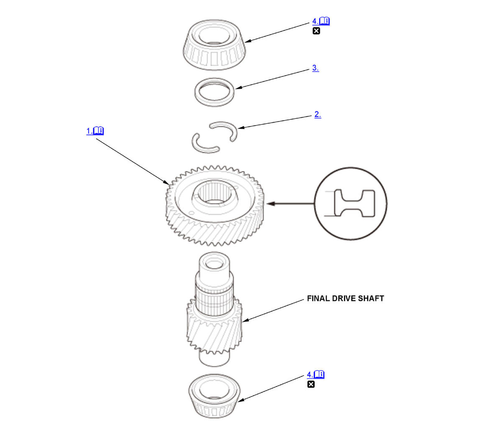

Final Drive Shaft Disassembly and Reassembly (L15B7/L15BA/L15BY (CVT)): Reassembly: Procedure
NOTE:
Numbered call-outs in figure pertain to list numbers in following procedure.

Courtesy of HONDA, U.S.A., INC. |
Detailed information, notes and precautions |
 |
Replace |
- Secondary Driven Gear - Install
NOTE: Make sure to assemble the final drive shaft and the final driven gear correctly (Combination A or B) as shown in the chart if either one of them or both are to be replaced. Correct combinations of the shaft and gear can be identified by the presence or the absence of the groove as shown in the chart.
1. Install the secondary driven gear (A) until it bottoms in the direction shown using a press. - 38 mm Cotter - Install
- Cotter Retainer - Install
- Final Drive Shaft Tapered Roller Bearing - Install
Transmission Housing Side 1. Install the final drive shaft tapered roller bearing (A) until it bottoms using the 15 x 135L driver handle, the 40 mm attachment, and a press.
Torque Converter Housing Side 2. Install the final drive shaft tapered roller bearing (A) until it bottoms using the 15 x 135L driver handle, the 45 mm attachment, and a press.